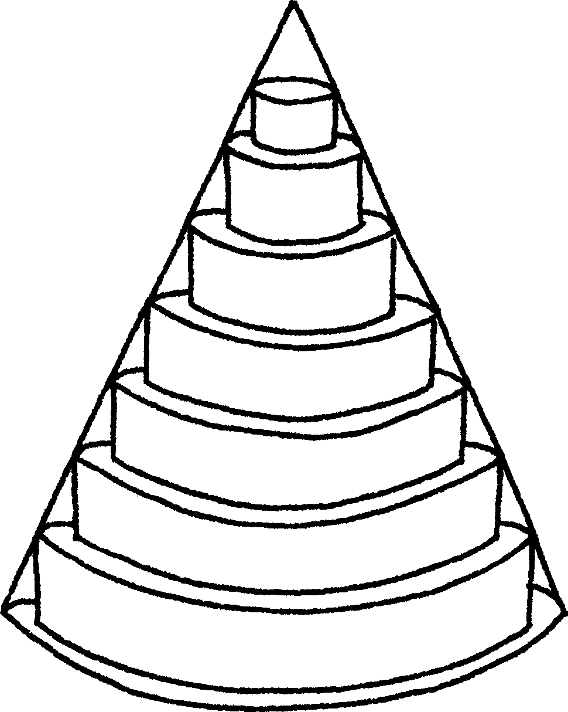
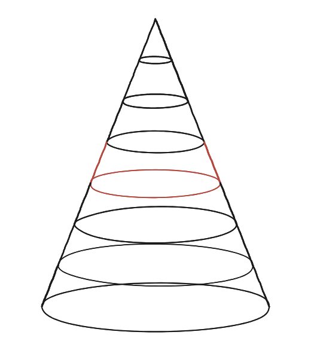

Pots endevinar el patró d'aquestes aproximacions?

Què hem de produir
No un únic volum: una successió de valors —un per cada nombre de discs— i el reconeixement de cap a on tendeix aquesta successió a mesura que n'hi ha més.
Comença amb pocs discs
Amb un sol disc —un cilindre curt dins del con— el volum aproximat es queda curt de veritat. Amb dos discs més prims, ja s'hi assembla més. Cada disc és un cilindre: el mateix objecte de volum conegut ja fet servir en una qüestió anterior sobre el volum d'una caixa, ara apilat en comptes de format per una sola capa.
La construcció

Tancar-ho
A mesura que n (el nombre de discs) creix, cada disc s'aprima i se n'ajusten més: la suma dels volums dels discs s'acosta cada cop més al volum real del con, sense arribar-hi mai amb un nombre finit de discs. Ara bé, dir només «s'acosta al volum del con, que ja el sabem» no seria contestar la pregunta: el que es demana és el patró, i el patró es pot escriure exactament.
Partim l'alçada en n llesques iguals de gruix h/n. El disc de la llesca número j (comptant des de dalt) té el radi que té el con al seu propi sostre, r(j−1)/n —per això queda sencer dins del con, i per això la llesca de més amunt no en conté cap. Sumant-los tots:
Vn = Σ π·[r(j−1)/n]²·(h/n) = (πr²h/n³)·[0² + 1² + … + (n−1)²] = (πr²h/n³)·(n−1)n(2n−1)/6
i desenvolupant el quocient queda una expressió que es llegeix d'un cop d'ull:
Vn = πr²h·( 1/3 − 1/(2n) + 1/(6n²) )
Aquest és el patró. La suma val sempre una mica menys que un terç del cilindre —els discs van per dins del con—, i el que li falta, 1/(2n) − 1/(6n²), es pot fer més petit que qualsevol número que ens diguin només triant n prou gran. No hi ha cap salt màgic al final: per a cada n hi ha una fórmula exacta, i l'únic valor que cap n no pot desmentir és (1/3)πr²h —el volum del con, no el del cilindre de la mateixa base i alçada.
És exactament el mateix tipus d'argument que retrobarem a la Qüestió 121 amb la paràbola: la mateixa suma de quadrats i la mateixa expressió, però amb els signes canviats —1/3 + 1/(2n) + 1/(6n²)—, perquè allà els rectangles sobresurten de la corba en comptes de quedar-hi per dins.
Amb n llesques, la suma dels discs val exactament Vn = πr²h·(1/3 − 1/(2n) + 1/(6n²)): sempre una mica per sota d'un terç del cilindre, i acostant-s'hi tant com es vulgui triant n prou gran. El límit és el volum del con, (1/3)πr²h —un terç del cilindre que el circumscriu, mai el cilindre sencer.
Comprovació
Con de radi 3, alçada 6: volum = (1/3)π(9)(6) = 18π ≈ 56,5. El cilindre corresponent —mateixa base i alçada— fa 3 vegades més: 54π ≈ 169,6. Amb la fórmula del patró, la fracció del cilindre val 1/8 amb n=2, 35/128 ≈ 0,273 amb n=8 (els set discs que es veuen al dibuix, més la llesca de dalt que queda buida) i 0,32835 amb n=100: s'acosta a 1/3, no a 1.